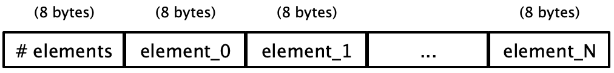

Lecture 10: Tuples and Memory Allocation
1 Computing with arbitrary-sized data
So far, our compiler supports a language with arbitrarily complex arithmetic and logical expressions, function definitions, and function applications. However, our only values are two primitives: integers and booleans. To make our language more fully-featured, we need the ability to handle structured, arbitrarily sized data.
At a high level, we know that there are three kinds of composite data:
Enumerated data types, with a finite set of distinct values
Structured data types, comprised of a finite set of pieces (either named as in structures, or positional as in arrays), where each piece is itself a value
Potentially-recursive union data, with a finite set of distinct categories of values, where each category of value could itself be structured, and where the pieces of those structures could themselves be union data.
The first kind of composite data really only manifests itself in the type system, where we need to be able to say, “These values are part of this enumeration, while those values are not.” Since enumerated data is merely a finite set of constants, we can simulate them merely by using some distinct set of integers.
Since union data is essentially an enumeration of structured data, if we had the ability to create structured data types, then we could encode union data types by adding a field to each value identifying which variant of the union this value belongs to.
But structured data does not admit such a simple encoding. It requires the ability to group several values into one, and use that compound thing as a value: it should be created by some expressions, used by others, and passed to and returned from functions. In other words, structured data is a fundamentally new thing in our language.
We can consider various kinds of structured data such as records with named fields (as
in Rust/C/C++ struct). But the simplest form of structured data is the humble pair,
and its bigger cousin the array.
Standard reminder: Every time we enhance our source language, we need to consider several things:
Its impact on the concrete syntax of the language
Examples using the new enhancements, so we build intuition of them
Its impact on the abstract syntax and semantics of the language
Any new or changed transformations needed to process the new forms
Executable tests to confirm the enhancement works as intended
2 Adding pairs to our language
2.1 Syntax and examples
We’ll write pairs as
For example, [4, 5] is a pair consisting of two numbers. The
flexibility of our grammar, though, allows us to nest pairs inside one another,
as in [3, [true || false, false]] or [[[1, 2], 3], 4 + 5],
or any other combination we might attempt. However, in order to use our
pairs, we need to be able to access their components. We’ll do so with two new
primitive operators
The intended semantics are that these two primitives project out the first or
second components of the pairs: fst [3, 4] == 3 and
snd [4, [true,5]] == [true, 5].
We can add these expression forms to our AST easily enough, modelling the new accessors as unary primitives:
enum Exp<Ann> { ...
| Pair(Box<Exp<Ann>>, Box<Exp<Ann>>, Ann),
}
enum Prim1 { ... Fst, Snd
}2.2 Representing pairs
Introducing pairs into our language is a much more invasive change than it
might appear. For the first time, we have values in our language that are too
big to fit into a register—
If we want to be able to use pairs as arguments to functions, we’d have to communicate to the callee that some of its arguments aren’t uniformly sized, so its initial environment can’t simply map the ith argument to
RBP + 8 * (i + 2). Perhaps we could convey this information via static types, but it certainly would complicate passing pairs to runtime functions likeprint! This starts to break the calling convention, which breaks interoperability and therefore is not something to be done lightly.If we want to be able to return pairs from functions, we have to figure out how to so without using
RAXas the entirety of our answer. Again this breaks the calling convention, and so we should reconsider.If we want to nest pairs inside each other, as in our examples above, then we immediately fail: In
[[1, 2], 3], there simply is no way to put both1and2at consecutive stack slots (because they’re part of a pair), and also put that entire pair and3at consecutive stack slots —we need at least three slots!
Instead, we’re going to have to look elsewhere to store our pairs: we’re going to use the heap.
2.2.1 Introducing pointers
The heap is another region of memory, at numerically-smaller addresses than our stack, where we can potentially allocate space for whatever values we want. We’ll defer for a moment how exactly to do that, but suppose that we can. Then for each pair we have to evaluate, we can request space for two consecutive words of memory, and store the two halves of the pair in those two words. Crucially for us, the address of (the first of) those two words is unique: no other pair will exist at that exact address. And, even better, one address is small enough to fit into a register. We can use this address as the representation of our pairs: it is small enough to pass into and out of functions, and small enough to be placed into the components of another pair. By adding this indirection, we’ve solved all three of the failings above.
2.2.2 Tagging pair values
Of course, now that we have a new kind of value, we need a tag to go with it,
to distinguish pairs from booleans or integers. We have three tags
remaining, so we can arbitrarily choose one of them, say 0x1, to mark our
pointers as pairs. This seems risky, though —
The easiest set of known bits to work with is 0b000. Can we ensure that
every memory address we allocate always ends in three zero bits? Yes! “Ends
with three zero bits” is the same thing as saying “multiple of 8”
Conveniently, our pairs are two words wide, which means they’re exactly 16 bytes
long. If we can ensure that every allocation we make is aligned to an
8-byte boundary, then all our addresses will end in 0x000, which means we
are free to use those three bits for whatever tag we need.
2.2.3 Allocating space on the heap
Where can we actually obtain memory from? We will use Rust’s memory allocation to obtain a big buffer of space to use, and we’ll manipulate that buffer directly from our assembly. (See below for how Rust might actually get itself started.)
Here is one possible strategy for handling memory; there are many others.
Let’s devote one register, R15, to always store a pointer to the next
available heap location. Then “allocating a pair” amounts to storing two
values into [R15] and [R15 + 8], and then incrementing
R15 by 16. (We’ll ignore out-of-memory errors and garbage collection, for
now.) Once again, if R15 started off as a multiple of 8, then after this
process it remains a multiple of 8, so our alignment invariant still holds.
All that remains is to initialize R15 appropriately, which
requires collaboration between main and start_here. We
need to allocate a buffer of memory in Rust as a global array of words
[u64], and then pass that pointer in to our code. In other
words, start_here now really is a function that takes
in arguments—
static mut HEAP: [u64; 100000] = [0; 100000];
#[link(name = "compiled_code", kind = "static")]
extern "C" {
#[link_name = "\x01start_here"]
fn start_here(heap *mut u64) -> SnakeVal;
}
fn main() {
let output = unsafe { compiled_code(HEAP.as_mut_ptr()) } ;
let _ = print_snake_val(output);
}Note here that we are turning an arryay HEAP into a raw
pointer to u64 which is the type of unsafe pointer you are
used to from C/C++, as opposed to the smart pointers like
&,Box, etc.
On the callee side, in start_here, we need to store this
provided address into R15, but we first need to ensure that it
is a multiple of 8. This is actually guaranteed by the Rust compiler,
but in case you are curious, if we didn’t know the pointer was aligned
we would we need to round the address up to the nearest
multiple of 8 (because rounding down might give us an unallocated
address). The easiest way to achive this is to add 7 to the
address, then round down to the nearest multiple of 8. Recall from
Lecture 7: Checking for errors and calling Rust functions that in the System V calling convention first
six arguments to a function are passed in registers, and
our_code_starts_here is being called from main. So we
can find the value of HEAP in register RDI:
our_code_starts_here:
... ;; basic function prologue as usual
move R15, RDI ;; Load R15 with the passed-in pointer
add R15, 7 ;; \ add 7 to get above the next multiple of 8
mov temp_reg, 0xfffffffffffffff8 ;; | load a scratch register with the necessary mask
and R15, 0xfffffff8 ;; / and then round back down.
...The indirection through temp_reg is necessary once again because of the
limitation on 64-bit literals in and instructions.
Do Now!
For this particular sequence of instructions, what register could we use for
temp_reg, and why? (Hint: it needs to be a register whose value is never needed again, since we’d overwrite its value...)
Do Now!
What small changes would be needed to ensure
R15has a 16-byte aignment? Speculate on any advantages or disadvantages such a choice might give us.
2.3 Sequentialization
Given that evaluating a pair actually performs a memory allocation, we cannot treat pairs as immediate values: the value simply isn’t immediately ready. Instead all immediate values representing pairs will have to be variables that are bound to the result of an allocation.
This leads to a simple design:
enum SeqExp<Ann> {
...
Pair(ImmExp, ImmExp, Ann),
}We force the two components of the pair to be immediate, so that the only computational step happening here is the memory allocation itself.
2.4 Compiling pairs and pair accesses
We now have all the tools we need to generate code for all our pair-related expressions. To construct a pair,
... assume the two parts of the pair are already evaluated ...
mov [R15], <first part of pair>
mov [R15 + 8], <second part of pair>
mov RAX, R15 ;; Start creating the pair value itself
add RAX, 0x1 ;; tag the pair
add R15, 16 ;; bump the heap pointerThe order of execution here is important: we must fully evaluate the two
parts of the pair prior to creating the pair, or else the evaluation of each
component might modify R15, leading to non-consecutive memory addresses
for our pair. Fortunately, our sequentialization conversion ensured this for us. Next we
must save the current value of R15 as our result RAX, so
that we can tag it correctly.
To access the first element of a pair,
mov RAX, <the pair value>
<check that RAX is indeed a pair>
sub RAX, 0x1 ;; untag it
mov RAX, [RAX + 0] ;; treat RAX as a pointer, and get its first wordAccessing the second element uses mov RAX, [RAX + 8] instead.
3 Generalizing to arrays
Arrays are simply longer pairs. We could consider representing tuples as a linked-list of pairs, but that would be quite inefficient. Instead, we’ll generalize everything above that hard-coded “two elements” to become a list of elements. This has some consequences for our representation, but it mostly goes through smoothly.
3.1 Syntax and examples
We’ll write arrays as
An array can have zero or more fields, as in [3, 4],
[], or [true, false, 5]. Accessing elements
of an array can’t be restricted to two unary primitive operators now,
because we don’t know in advance how large our arrays will be.
Instead, we’ll add a more general expression
Here, the expression e[i] evaluates to the ith item of a
array using 0-indexing.
We’ll represent arrays and array accesses as
enum Exp
| Array(Vec<Exp<Ann>>, Ann),
| Index{ array: Box<Exp<Ann>>, index: Box<Exp<Ann>>, ann: Ann }Exercise
What are the various errors that could arise from these expressions?
Simply working through our pipeline:
It should be a dynamic error to index into something that isn’t an array.
It should be a dynamic error to index into an array using a value that isn’t an integer
It should be a dynamic error to access an out-of-bounds index, either below 0 or greater than or equal to the length of the array.
3.2 Representing arrays
We can’t merely store all the items of the array consecutively in memory; we need to know how many items there are. Accordingly, we’ll add a header word at the beginning of our tuple in memory, that will store the size of the array:

Note carefully that the first word is an actual integer; it is not an encoded value in our language.
Since each component of the tuple is an 8-byte word, as long as our
initial heap pointer RDI is 8-byte aligned, allocating a new
array will remain 8-byte aligned.
Again, we need to tag our array values, just as we did above for pairs. Since
tuples generalize pairs, the simplest approach is to eliminate pairs as a
special case, and just use arrays everywhere —0x1
tag to now mean arrays. It’s important to note that we could use both
representations in our compiler —
Do Now!
What are the possible tradeoffs of using just one representation for all arrays, vs using two representations for pairs and arrays separately?
3.3 ANF transformations
We simply generalize:
enum SeqExp<Ann> =
...
| Array(Vec<ImmExp>, Ann)
| Index { array: ImmExp, index: ImmExp, ann: Ann }Exercise
Complete the sequentialization transformation for
ArrayandIndex.
3.4 Compiling tuples and tuple accesses
Again we generalize, assuming that all parts of the tuple have been evaluated (as ensured by ANFing).
... assume the parts of the tuple are already evaluated ...
mov [R15 + 0], n ;; the size of the tuple
mov [R15 + 8 * 1], <first part of tuple>
mov [R15 + 8 * 2], <second part of tuple>
...
mov [R15 + 8 * n], <last part of tuple>
mov RAX, R15 ;; Start creating the tuple value itself
add RAX, 0x1 ;; tag the tuple
add R15, 8 * (n + 1) ;; bump the heap pointerExercise
Implement this in
compile_to_string.
To implement a tuple access, again we generalize, being careful to account for the header word:
mov RAX, <the tuple value>
<check that RAX is indeed a tuple>
sub RAX, 1 ;; untag it
mov R14, <the index value>
<check that R14 is indeed an integer>
sar R14, 1 ;; untag it
cmp R14, 0 ;; \ make sure the index
jl index_too_low ;; / is non-negative
cmp R14, [RAX] ;; \ make sure the index is
jge index_too_high ;; / within the size of the tuple
mov RAX, [RAX + 8 * R14 + 8] ;; treat RAX as a pointer, and get its nth wordExercise
Implement this in
compile_to_string.